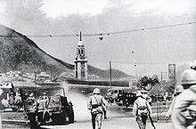
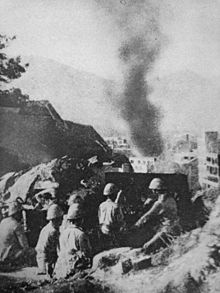
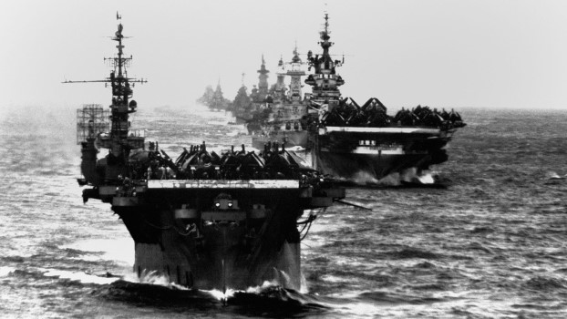

The year is 1911, 3 years before the Great War. The typical Asian- Canadian citizen didn't enjoy the benefits of Canada, such as voting (the inability to vote made the minority scapegoats for political campaign), inability to swim in public pools or sitting only on balconies of movie theaters.
In 1923, the Canadian government introduced the Chinese Immigration Act, banning any Chinese immigrants into Canada. To protest this, the Chinese- Canadian community refused to participate in Dominion Day, also known as Canada Day, until 1947 where the ban was lifted. As the years progressed, the Great Depression struck the Asian- Canadian community hard, with 1/4 of its population leaving on a 1 way trip back to their home country.
In 1932, the CCF (today's NDP) supported Asian's voting rights, and their most popular statement is "A vote for the CFF is a vote to give Chinaman and the Japanese the same voting rights as you have." During the Second World War, over 600 Chinese- Canadians joined the Canadian war effort, including Gun Chong. In 1944, a group of Chinese activists sent a petition to the BC Parliament to try to be able to vote and participate during elections. In 1947, the Asian- Canadian community suddenly recieved the right to vote, due to the Canadian participation in the United Nations (whose charter goes against Canadian discriminate policies).
*note: I have done a social studies assignment on the whole Pacific War in WW2 on word... maybe I can cut/ paste it here...?
As the years progressed, the racism eased a lot, compared to the start of the 20th century, although it's prevalent again in current times due to COVID originating in China.
  
Japanese troops entering Hong Kong | Japanese Artillery at Hong Kong | American Carrier Fleet